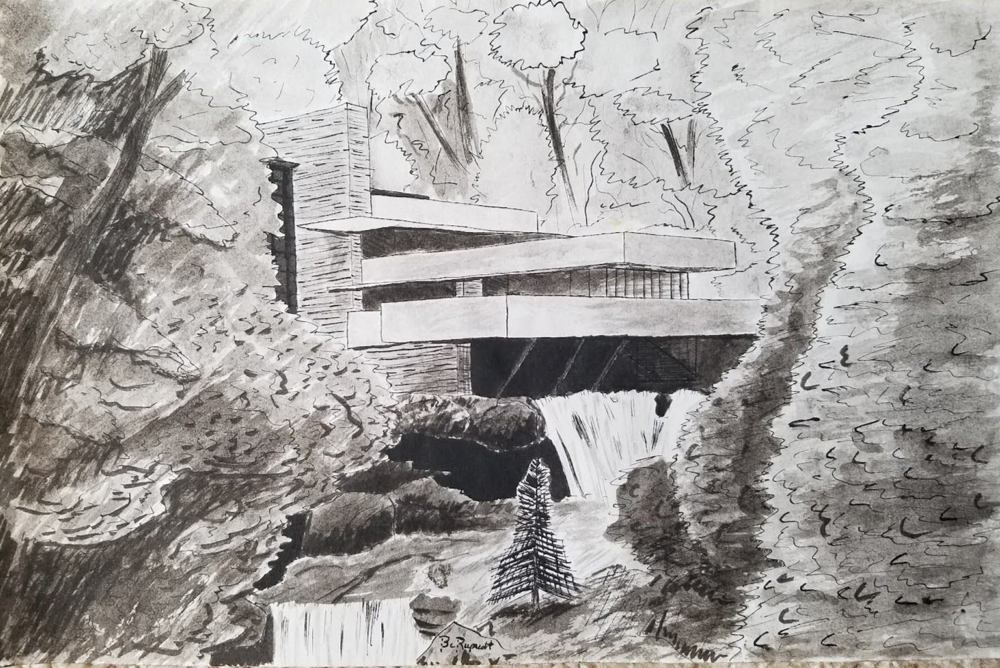
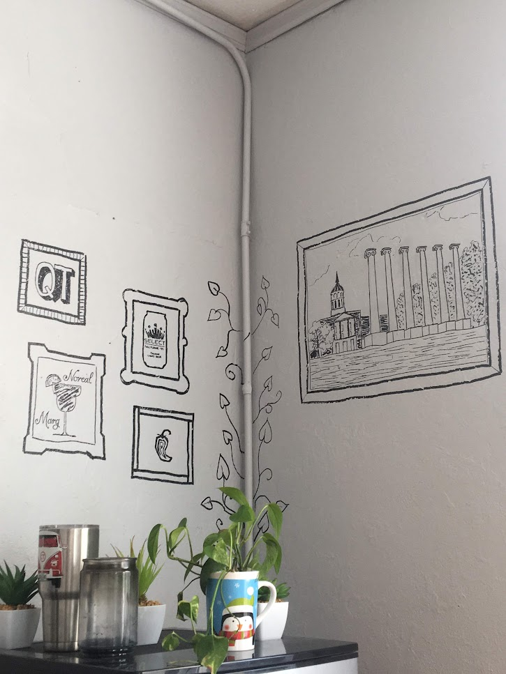
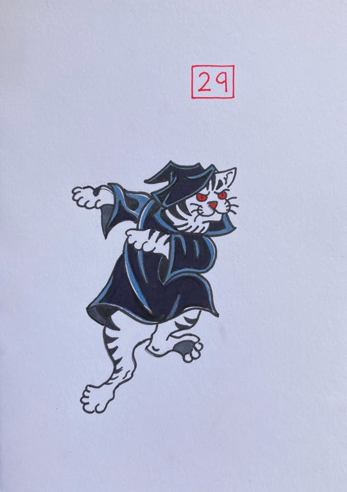
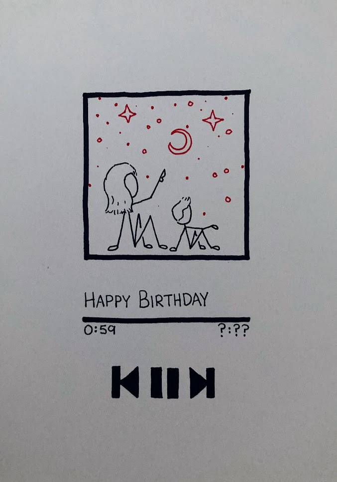
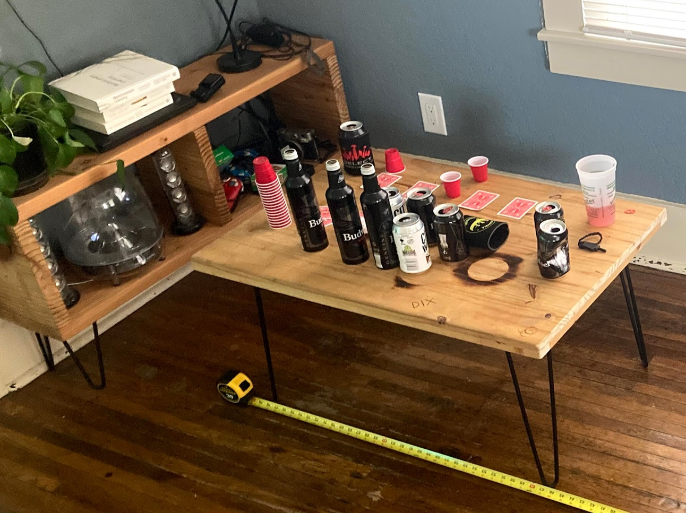

art
My favorite media are ink drawing and woodworking, here are a few of my best pieces from over the years.
 ^ Done using sharpie on paper, based on the houses from Your Cabin in the Woods by Conrad Meinecke.
^ Done using sharpie on paper, based on the houses from Your Cabin in the Woods by Conrad Meinecke.
 ^ Done using a dip pen and black india ink. This is Fallingwater, a house designed by Frank Lloyd Wright in 1935.
 ^ …enough, it wouldn’t be the minimum. From KISS
^ …enough, it wouldn’t be the minimum. From KISS
 ^ I particularly like black ink drawings with that bold, all-black shading style, though it’s very hard to get right.
^ I particularly like black ink drawings with that bold, all-black shading style, though it’s very hard to get right.
 ^ On the flip side of that other doodle, I tried some pencil drawing, HB mechanicals don’t get very dark…
^ On the flip side of that other doodle, I tried some pencil drawing, HB mechanicals don’t get very dark…
 ^ Digital logic class was getting boring.
^ Digital logic class was getting boring.
 ^ “There are good ships and wood ships, ships that sail the sea, but the best ships are friendships, may they always be!”
^ “There are good ships and wood ships, ships that sail the sea, but the best ships are friendships, may they always be!”
 ^ Okay, a computer-aided drawing, but it looks dope.
^ Okay, a computer-aided drawing, but it looks dope.
Sharpie on the Walls
I always used to get waves of creativity during finals week in college. This time, me and two of my best friends broke out some sharpies and redecorated my room. I needed some artwork and posters.
 ^ Can you tell what my priorities were back then?
 ^ The pennants were done by Biggs.
^ The pennants were done by Biggs.
 ^ Why study when you can just give yourself the diploma already?
^ Why study when you can just give yourself the diploma already?
Bday card series
Ink on paper, doesn’t get better than that.
 ^ Red balloons only
^ Red balloons only
 ^ Bud Select is a family tradition, and STL staple.
^ Bud Select is a family tradition, and STL staple.
 ^ One line, then three more in red.
^ One line, then three more in red.
 ^ I need a boat.
^ I need a boat.
 ^ I copied a tattoo artist and added color, never making that mistake again.
 ^ Haha, get it? Like spotify…
 ^ I mean c’mon, I’m a minimalist, this one is my favorite.
^ I mean c’mon, I’m a minimalist, this one is my favorite.
Woodworking
I love building furniture out of wood because I can make it exactly how I want it. I built all of this using a circ saw (sometimes chop saw), drill, and sander. Oh, and a reciprocating saw because cutting plywood on the ground is very hard.
 ^ Maybe hard to see, but this is a 3-d wood sculpture that I was lead builder on. That archway is cut out of plywood, along with the tree and buildings on the back. This whole thing is 16 feet tall, and the front two panels are both 8 feet wide and slide on a rail at the top. The year before, the dummies in charge built a rail out of 2x12s that weighed hundreds of pounds and needed 20+ people to hoist up, sketchy. This year, me and my buddy built this rail out of 2x4s and put it up ourselves. Engineering is frat.
^ Maybe hard to see, but this is a 3-d wood sculpture that I was lead builder on. That archway is cut out of plywood, along with the tree and buildings on the back. This whole thing is 16 feet tall, and the front two panels are both 8 feet wide and slide on a rail at the top. The year before, the dummies in charge built a rail out of 2x12s that weighed hundreds of pounds and needed 20+ people to hoist up, sketchy. This year, me and my buddy built this rail out of 2x4s and put it up ourselves. Engineering is frat.
 ^ Not very complicated, but hey, that’s the joy of doing it yourself. I custom build that console to fit my speakers, and designed it so that I could get the Home Depot dudes to cut it for me (notice the cut ends stick out, so they don’t need to be perfect) and the coffee table has some custom “artwork” made by wood burning and such.
 ^ I carried this plywood home from the lumber yard across the street. Even 200 meters of walking with plywood is a major PITA. I built that microwave too, it’s actually a high-performance Deep Learning rig (mainly used for gaming).
^ I carried this plywood home from the lumber yard across the street. Even 200 meters of walking with plywood is a major PITA. I built that microwave too, it’s actually a high-performance Deep Learning rig (mainly used for gaming).
 ^ Built this out of plywood, my first time making a draw, really tricky. Wanted the most minimalist wood nighstand possible, found one online only in Australia for something like $400 and copied their design.
^ Built this out of plywood, my first time making a draw, really tricky. Wanted the most minimalist wood nighstand possible, found one online only in Australia for something like $400 and copied their design.
 ^ Built this squat rack to use with my barbell and weights. Inspector Mikey does not care one bit about squatting.
^ Built this squat rack to use with my barbell and weights. Inspector Mikey does not care one bit about squatting.
 ^ Framing is mostly just building boxes. Hell, most woodworking is just building boxes. Great skill.
^ Framing is mostly just building boxes. Hell, most woodworking is just building boxes. Great skill.